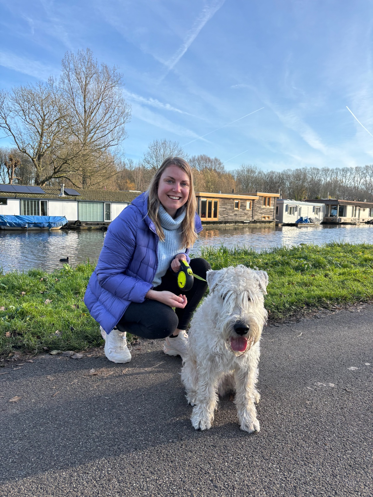
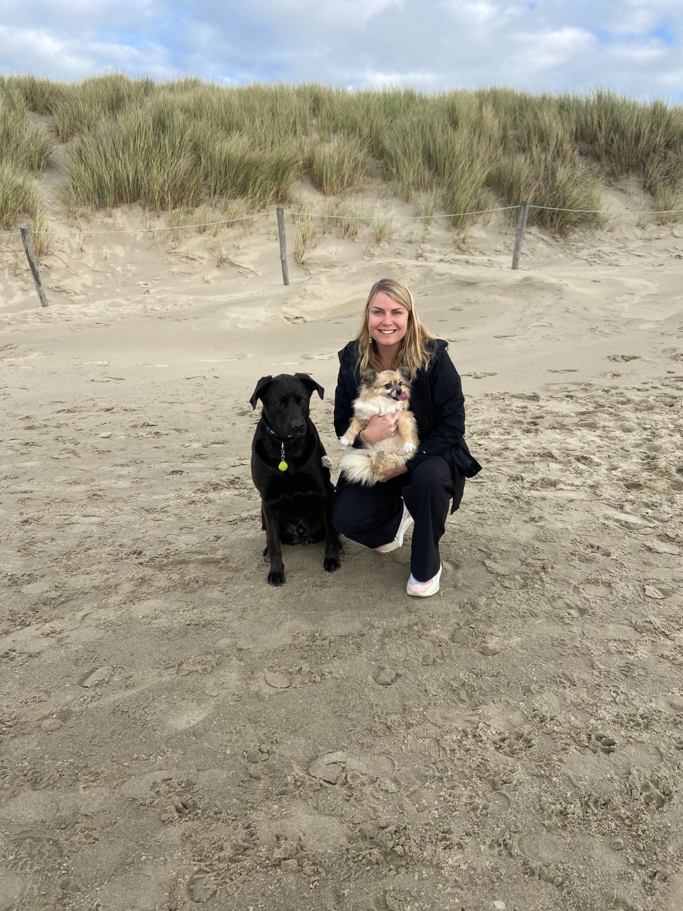
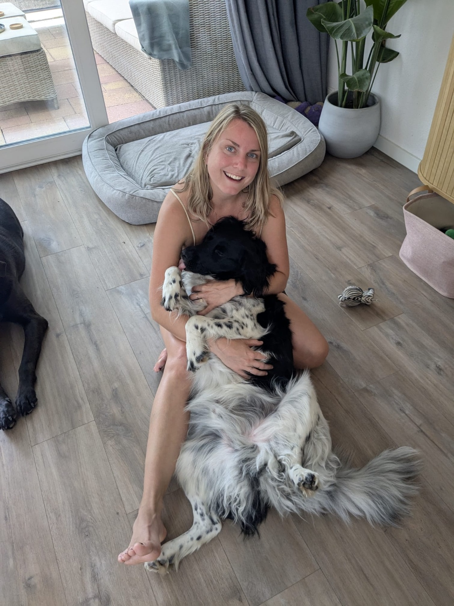

Persoonlijke hondenoppas in Utrecht en Zuilen
Een vertrouwd gezicht
voor jouw huisdier
Honden uitlaten, dagopvang en logeren in Utrecht en Zuilen. Persoonlijke hondenoppas met aandacht voor jouw hond.
Je ontvangt binnen 24 uur een reactie.



Dagopvang Logeren Hond uitlaten
Hondenoppas in Utrecht, met aandacht voor dier en baasje
Ik ben Kelly en ik ben opgegroeid met honden. Ik ben altijd gek geweest op dieren en vind het heerlijk om ze om me heen te hebben. Daarom help ik baasjes graag met persoonlijke opvang.
Vanuit Zuilen bied ik hondenoppas in Utrecht. Of het nu gaat om uitlaten, dagopvang of logeren: we bespreken vooraf wat jouw dier nodig heeft en wat voor jullie allebei prettig voelt. Ook huisoppas en de zorg voor andere dieren zijn in overleg mogelijk.
Lees meer over mij